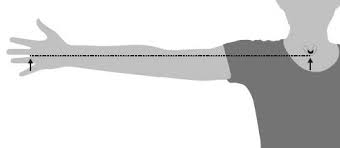

Height Estimation in Bedridden Patients
Measuring height in bedridden or immobile patients can be challenging due to the inability to stand upright. In such cases, alternative anthropometric methods are used to estimate height using body segment measurements. These estimates are valuable in clinical care, especially for calculating medication dosages, nutritional requirements, and physiological volumes.
Why Estimate Height Without Standing?
- To calculate nutritional needs, body surface area, and physiological volumes.
- For dosing medications accurately in critical care or chronic illness.
- To monitor growth or body composition in patients unable to stand due to injury, surgery, or illness.
Common Methods for Estimating Height
- Semi-span Method: Estimates height by doubling the distance from the sternum to the fingertips on an outstretched arm. It is useful when only one arm is available for measurement.
- Arm Span Method: Uses the full distance between the fingertips of both outstretched arms. This method typically mirrors a person’s actual height in most adults.
- Demi-span Method: Measures from the middle of the chest to the space between the middle and ring fingers. It’s a practical method and includes adjustments based on sex for better accuracy.
- Knee Height Method: Relies on measuring the distance from the heel to the knee. This method is known for its reliability, especially when paired with patient age and sex data.
- Ulna or Forearm Length Charts: Associates forearm length with height using standardized charts. This technique is simple and works well with limited equipment.
- Recumbent Length: Involves measuring from the top of the head to the heels while the individual is lying down. It’s a direct method but may be limited by physical constraints.
- Composite Equations: Combine multiple physical measurements and demographic data (like age and sex) for enhanced height prediction. These are especially effective for populations with diverse body types.
- Forearm Length-Based : estimate a patient's height, you can use the length of their forearm (ulna) as a reference. Simply measure the forearm and refer to the table below to find the corresponding height based on the patient's sex and age
Forearm Length-Based Height Estimation
| Ulna Length (cm) | Men <65 yrs (cm) | Men ≥65 yrs (cm) | Women <65 yrs (cm) | Women ≥65 yrs (cm) |
|---|---|---|---|---|
| 18.5 | 146 | 145 | 147 | 140 |
| 19.0 | 148 | 146 | 148 | 142 |
| 19.5 | 149 | 148 | 150 | 144 |
| 20.0 | 151 | 149 | 151 | 145 |
| 20.5 | 153 | 151 | 152 | 147 |
| 21.0 | 155 | 152 | 154 | 148 |
| 21.5 | 157 | 154 | 155 | 150 |
| 22.0 | 158 | 156 | 156 | 152 |
| 22.5 | 160 | 157 | 158 | 153 |
| 23.0 | 162 | 159 | 159 | 155 |
| 23.5 | 164 | 160 | 161 | 156 |
| 24.0 | 166 | 162 | 162 | 158 |
| 24.5 | 167 | 163 | 163 | 160 |
| 25.0 | 169 | 165 | 165 | 161 |
| 25.5 | 171 | 167 | 166 | 163 |
| 26.0 | 173 | 168 | 168 | 165 |
| 26.5 | 175 | 170 | 169 | 166 |
| 27.0 | 176 | 171 | 170 | 168 |
| 27.5 | 178 | 173 | 172 | 170 |
| 28.0 | 180 | 175 | 173 | 171 |
| 28.5 | 182 | 176 | 175 | 173 |
| 29.0 | 184 | 178 | 176 | 175 |
| 29.5 | 185 | 179 | 177 | 176 |
| 30.0 | 187 | 181 | 179 | 178 |
| 30.5 | 189 | 182 | 180 | 179 |
| 31.0 | 191 | 184 | 181 | 181 |
| 31.5 | 193 | 186 | 183 | 183 |
| 32.0 | 194 | 187 | 184 | 184 |
Important Considerations
- Choose a method based on the patient's mobility and accessibility of body parts.
- Use sex- and race-specific approaches when available for greater precision.
- Note that all these are estimations, not exact measurements. Variability can occur.
Measurement Guide for Bedridden Patients
Semi-span (Demi-span)
Measure from the middle of the sternal notch to the tip of the middle finger. Keep the arm in line with the shoulder.
Forearm Length
Measure from the tip of the elbow to the midpoint of the wrist bone. The forearm should be straight.
Recumbent Height
Measure the distance from the top of the head to the heel with the patient lying flat using a special measuring scale.
Knee Height
Use a sliding caliper from under the heel to the top of the thigh while the patient is lying or sitting.
Calf Circumference
Measure the widest part of the calf on the non-dominant leg. Ensure the leg is relaxed.

Arm Circumference
Measure halfway between the shoulder and the elbow. This is the midpoint of the upper arm.
Subscapular Skinfold
Use calipers to measure a diagonal skinfold just below the bottom angle of the shoulder blade.
Arm Length
Measure from the upper edge of the acromion process to the midpoint of the elbow, from the back side of the patient.

Abdominal Circumference
Measure around the abdomen at the midpoint between the last rib and the top of the hip bone. Ensure relaxed posture.

Conclusion
Accurate height estimation in bedridden patients is crucial for clinical assessments and treatment planning. By using validated anthropometric methods such as knee height, demi-span, or arm span, healthcare professionals can derive reasonably accurate height estimates, even in the absence of upright measurements. Method selection should be based on patient condition, available tools, and clinical needs.